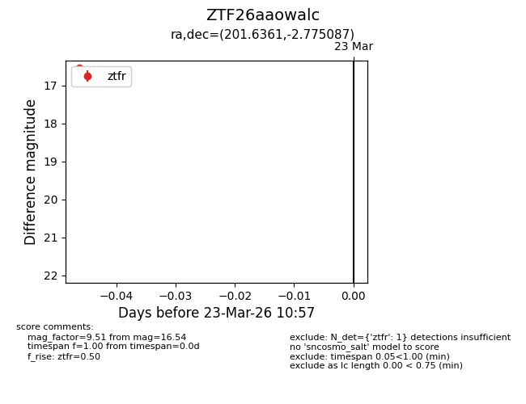
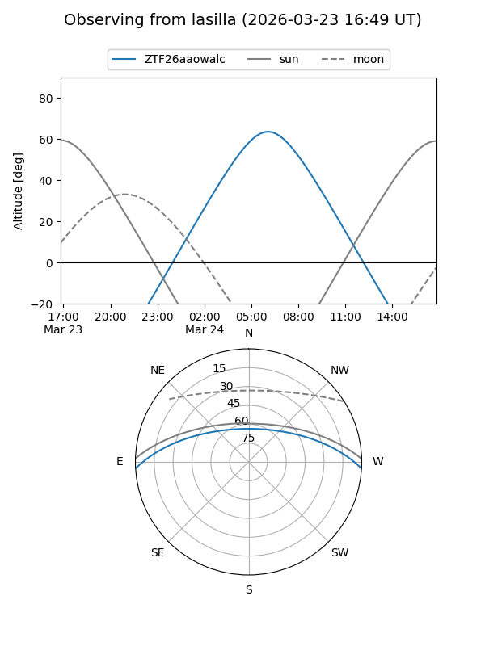
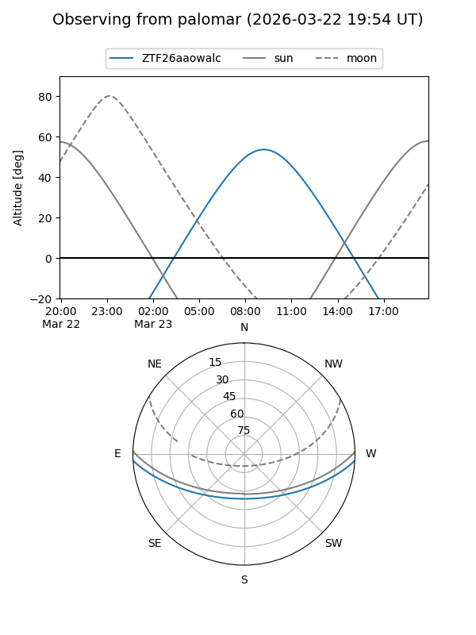

ZTF26aaowalc
Target ZTF26aaowalc at 2026-03-23 11:00
Aliases and brokers:
FINK: link
Lasair: link
ALeRCE: link
alt names
ZTF26aaowalc (ztf,fink_ztf)
Coordinates:
equatorial (ra, dec) = 201.6361,-2.77509
equatorial (HMS+DMS) = 13:26:32.66,-02:46:30.31
galactic (l, b) = (320.1034,+58.92128)
Flags:
Photometry:
last ztfr=16.54
1 ztfr detections
Lightcurve

Visibility


Additional plots